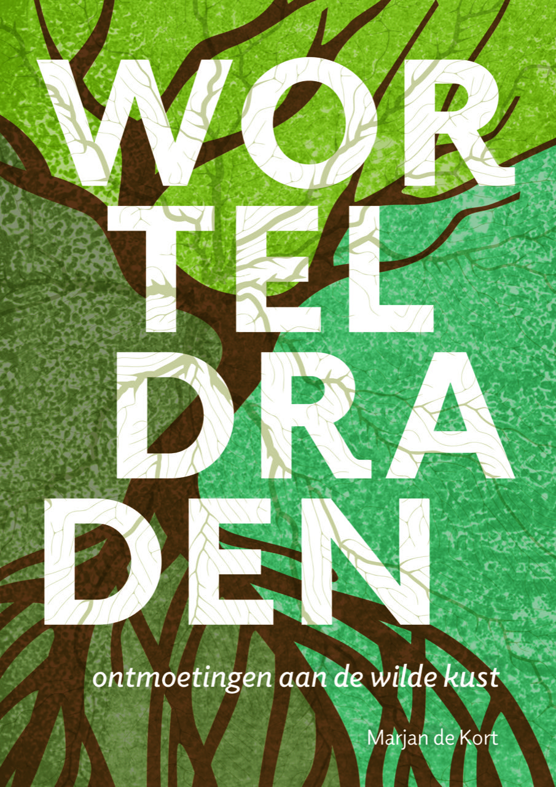
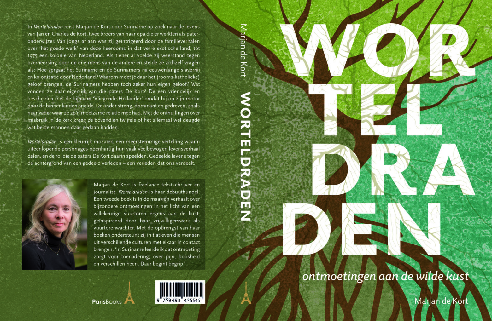

Kleurrijk mozaïek in de stijl van ‘De koningin van Paramaribo’ van Clark Accord
Worteldraden – ontmoetingen aan de wilde kust

Over het boek
In Worteldraden reist de auteur door Suriname op zoek naar het leven van Jan en Charles de Kort, broers van haar opa en ooit paters-onderwijzer aldaar. Als kind hoorde ze verhalen over hun “goede werk” in de voormalige Nederlandse kolonie, maar als tiener groeide haar twijfel. Hoe vergaat het Suriname na eeuwen van slavernij en kolonisatie? Waarom het rooms-katholieke geloof brengen als er al eigen tradities zijn? En wat vonden de Surinamers eigenlijk van de paters De Kort – de een mild en bescheiden en de Vliegende Hollander genoemd omdat hij in soutane op zijn motorfiets door het binnenland snelde -, de ander streng, gedreven en dominant, net als haar vader met wie ze botste? De latere onthullingen over misbruik in de kerk versterkten haar twijfel: was dat “goede werk” wel zo onschuldig?
Boekpresentaties
Suriname
* 28 oktober 2025 – 17:30 uur, Tuin Kerkmuseum, Henck Arronstraat 12, Paramaribo – Officiële presentatie aan het RK bisdom, de Nederlandse ambassade, het Nationaal Archief, cultuur-maatschappelijke organisaties en de Surinaamse pers. Met interview door journalist Audry Wajwakana van De Ware Tijd.
* 6 november 2025 – 19:00 uur, Schrijversgroep77, Tori Oso, Fred Derbystraat 76, Paramaribo – Informele meet-and-greet met voorleesmoment en aanbieding eerste exemplaar aan schrijfster, documentairemaakster en kind van beide landen Tessa Leuwsha. Met interview door Sylva Koemar, vice-voorzitter van de Schrijversgroep.
* 7 november 2025 – 10:00 uur, Bibliotheek Anton de Kom Universiteit (AdeK), Gebouw 16, Leysweg 86, Paramaribo – Presentatie, meet-and-greet en voorleesmoment voor studenten, docenten en relaties van de AdeK.
Nederland
* 21 november 2025 – 16:00 uur, Boekhandel De Drvkkery, Middelburg – Aanbieding eerste exemplaar aan Arwin Ralf, wetenschappelijk onderzoeker van DNA-project ‘Ontrafel de ontnomen identiteit’ waarmee hij nazaten van tot slaaf gemaakten hun identiteit wil teruggeven, en interview door journalist en jurylid Libris Literatuur Prijs, Jan van Damme.
(Fotograaf auteursfoto: Marijn Kluijfhout)

Over de auteur
Marjan de Kort (1962) is freelance tekstschrijver en journalist. Worteldraden is haar debuutbundel. Haar motivatie, de zoons van haar te jong overleden broer deze bijzondere familiegeschiedenis meegeven én tegelijkertijd de gevolgen van de lastige geschiedenis die Surinamers en Nederlanders delen. ‘De oceaan scheidt ons, maar verbindt ons ook. In Suriname leerde ik dat ontmoeting zorgt voor toenadering. Over pijn, boosheid en verschillen heen. Daar begint begrip.’
Haar tweede boek is in de maak. Dat verhaalt over kleurrijke ontmoetingen in het licht van een willekeurige vuurtoren ergens aan de kust, geïnspireerd door haar vrijwilligerswerk als vuurtorenwachter op ’t IJzeren Torentje aan de Zeedijk van Westkapelle. Met de opbrengst van haar boeken steunt zij initiatieven die mensen uit verschillende culturen met elkaar in contact brengen.
Verkrijgbaar
Worteldraden is verkrijgbaar bij de betere boekhandels in Suriname (SRD 950) en Nederland (€ 23,95) en online via de bekende webshops, zoals Atlantis.sr, Suribooks.com, Vaco.sr, Bol.com, Bruna.nl, Boekenportaal.sr, Libris.nl, e.a.
Noot voor de redactie – Meer informatie
* Uitgeverij Paris Books, tel. 06 – 207 357 33
info@parisbooks.nl, www.parisbooks.eu
* Auteur Marjan de Kort, tel. 06 – 407 806 37
info@meerdanwoorden.com, www.meerdanwoorden.com
